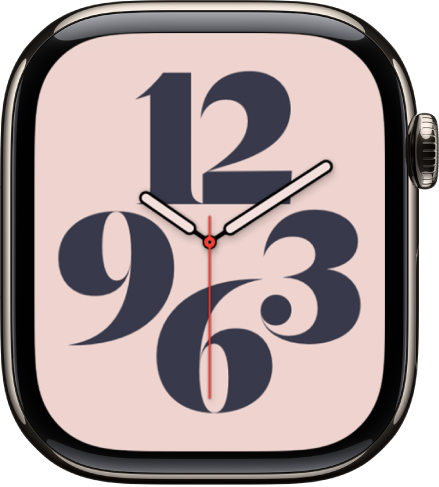

此表盘具有三种自定义字体。
下方的文件数包括本地化资源。固件名称键能确认包的归属；组件的圆屏点击边界、亮屏过渡与 AOD 对照均待设备验证。
NTKGreyhoundFaceBundle.bundleFACE_STYLE_GREYHOUND_DESCRIPTIONEDIT_OPTION_LABEL_DENSITY_DETAILEDEDIT_MODE_LABEL_TYPEFACEEDIT_OPTION_LABEL_STYLE_ARABIC_COMPATIBILITYEDIT_OPTION_LABEL_STYLE_ROMANEDIT_OPTION_LABEL_DENSITY_SIMPLEEDIT_OPTION_LABEL_FONT_TOKYOEDIT_MODE_LABEL_STYLEEDIT_OPTION_LABEL_FONT_NEW_YORKEDIT_OPTION_LABEL_STYLE_ARABICEDIT_OPTION_LABEL_FONT_SFEDIT_OPTION_LABEL_STYLE_CHINESEEDIT_OPTION_LABEL_STYLE_DEVANAGARIEDIT_OPTION_LABEL_DENSITYEDIT_OPTION_LABEL_STYLE_ARABIC_INDICEDIT_OPTION_LABEL_STYLE_ARABIC_INDIC_COMPATIBILITY色组与设备条件 Greyhound.color.plist 共享色组与默认值
-[NTKGreyhoundFaceView setTritiumScale:];-[NTKGreyhoundFaceView tritium_createFaceAnimator];-[NTKGreyhoundFaceView tritiumScale];-[NTKGreyhoundFaceView _updateColorForTritiumWithProgress:];-[NTKGreyhoundFaceView _applyTransitionFraction:fromOption:toOption:forCustomEditMode:slot:];-[NTKGreyhoundFaceView tritium_createFaceAnimator];-[NTKGreyhoundFaceView _cleanupComplicationTransition];-[NTKGreyhoundFaceView _configureForTransitionFraction:fromEditMode:toEditMode:];+[NTKGreyhoundColorEditOption _orderedValuesForDevice:];-[NTKGreyhoundContentView initWithFrame:device:style:density:typeface:colorPalette:];-[NTKGreyhoundContentView setColorPalette:];-[NTKGreyhoundContentView colorPalette];-[NTKGreyhoundFace editOptionThatHidesAllComplications];-[NTKGreyhoundFace _complicationSlotDescriptors];-[NTKGreyhoundFace _defaultColorForDevice];-[NTKGreyhoundFace _numberOfOptionsForCustomEditMode:slot:];-[NTKGreyhoundFace _defaultOptionForCustomEditMode:slot:];-[NTKGreyhoundFace _indexOfOption:forCustomEditMode:slot:];-[NTKGreyhoundFace _optionAtIndex:forCustomEditMode:slot:];-[NTKGreyhoundFace orderedComplicationSlots];-[NTKGreyhoundFaceView _complicationAlphaForEditMode:];-[NTKGreyhoundFaceView _updateDialComplicationWithTextColor:];-[NTKGreyhoundFaceView createFaceColorPalette];-[NTKGreyhoundFaceView _complicationContainerViewForSlot:];-[NTKGreyhoundFaceView _applyTransitionFraction:fromOption:toOption:forCustomEditMode:slot:];-[NTKGreyhoundFaceView _complicationColorForEditMode:];-[NTKGreyhoundFaceView layoutSubviews];-[NTKGreyhoundFaceView _applyBreathingFraction:forCustomEditMode:slot:];-[NTKGreyhoundFaceView _cleanupComplicationTransition];-[NTKGreyhoundFaceView _updateDialComplicationWithFont:];-[NTKGreyhoundFaceView _applyOption:forCustomEditMode:slot:];-[NTKGreyhoundFaceView _updateColorForTritiumWithProgress:];-[NTKGreyhoundFaceView _loadCurrentComplicationFont];-[NTKGreyhoundFaceView _configureComplicationView:forSlot:];-[NTKGreyhoundFaceView _dialComplicationView];-[NTKGreyhoundFaceView _complicationFontForTypeface:fontSize:fontWeight:useNumeralsFont:];-[NTKGreyhoundFaceView palette];-[NTKGreyhoundFaceView _complicationFontForTypeface:];-[NTKGreyhoundFaceView _complicationFontForTypeface:complicationType:];-[NTKGreyhoundFaceView _updateContentViewColorsWithPalette:];-[NTKGreyhoundFaceView _applyRubberBandingFraction:forCustomEditMode:slot:];-[NTKGreyhoundFaceView _updateComplicationCenterOffsetForStyle:];